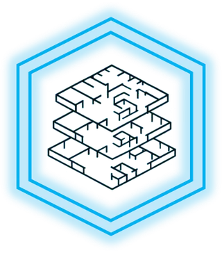
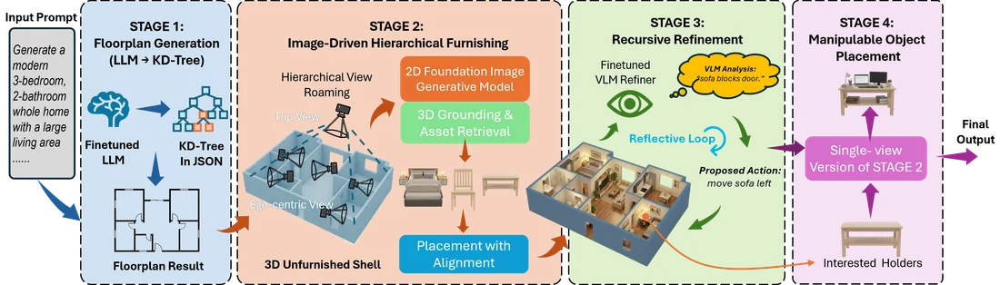
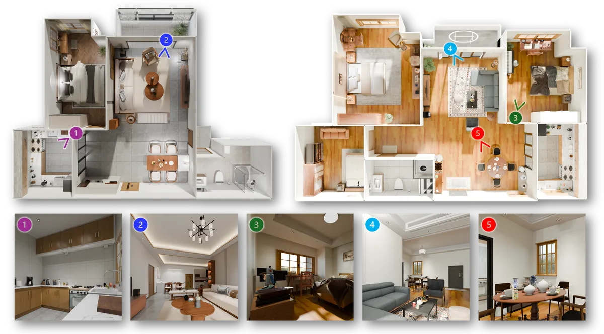
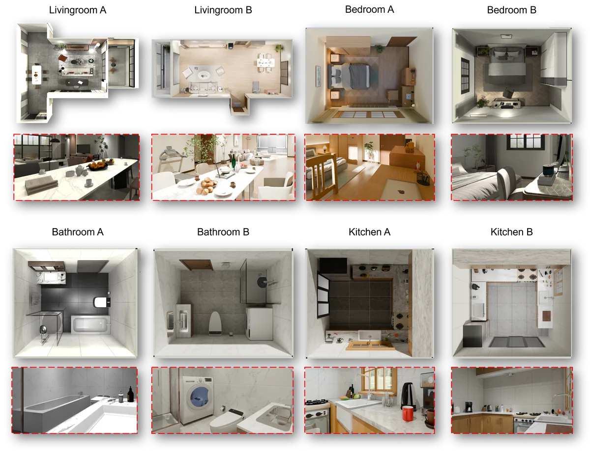

300K
Real-World Floorplan Dataset
A Unified Floorplan-to-Furnished Framework for Generating Controllable, Densely Interactive Whole-Home Scenes
1 Ace Robotics · 2 CUHK MMLab · 3 Shenzhen Loop Area Institute
*Equal contribution · †Project lead · Corresponding author
Indoor scene generation is crucial for robot simulation and modern interior design. However, complex layouts together with scarce 3D scene data make learning-based generation challenging. Existing methods often rely on hand-crafted rules or focus on isolated sub-tasks (e.g., floorplan synthesis or single-room furnishing), producing whole-home scenes that lack global coherence, realism, and simulation readiness. To mitigate these limitations, we propose a unified hierarchical framework that decomposes indoor scene synthesis into controllable stages. First, we curate a large-scale dataset of 300K real residential floorplans to train a large language model for whole-home floorplan generation. With detailed descriptions and a K-D tree–based representation, our method enables fine-grained, controllable whole-home floorplan generation. Building upon the generated whole-home floorplan, we leverage image generation models to draft furniture layouts from multi-level roaming viewpoints, and then generate the layouts of small manipulable objects on different supporting surfaces (e.g. cabinets, desks, and dining tables) for embodied AI simulation. During furniture & object layout generation, a VLM-based refiner iteratively corrects furniture & object placement, and a 3D generative model enables flexible replacement of individual assets. We further attach basic physical attributes and simple surface texture and lighting setups to complete the pipeline for embodied AI use. Experiments and user studies demonstrate that our pipeline produces indoor spaces with greater layout diversity and stronger 3D design appeal, outperforming prior methods on both quantitative and qualitative metrics. Finally, alongside our generation pipeline, we will release the floorplan dataset and 5K fully furnished scenes to the community.



@article{li2026homeworld,
title = {HomeWorld: A Unified Floorplan-to-Furnished Framework for Generating Controllable, Densely Interactive Whole-Home Scenes},
author = {Li, Wenbo and Ju, Xiaoliang and Qin, Zipeng and Fang, Rongyao and Li, Hongsheng},
journal = {arXiv preprint},
year = {2026},
note = {Project page: https://kairos-homeworld.github.io/}
}